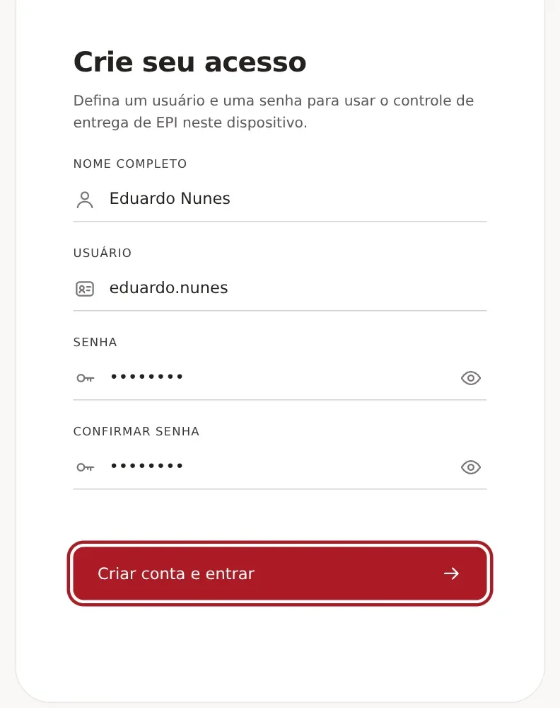
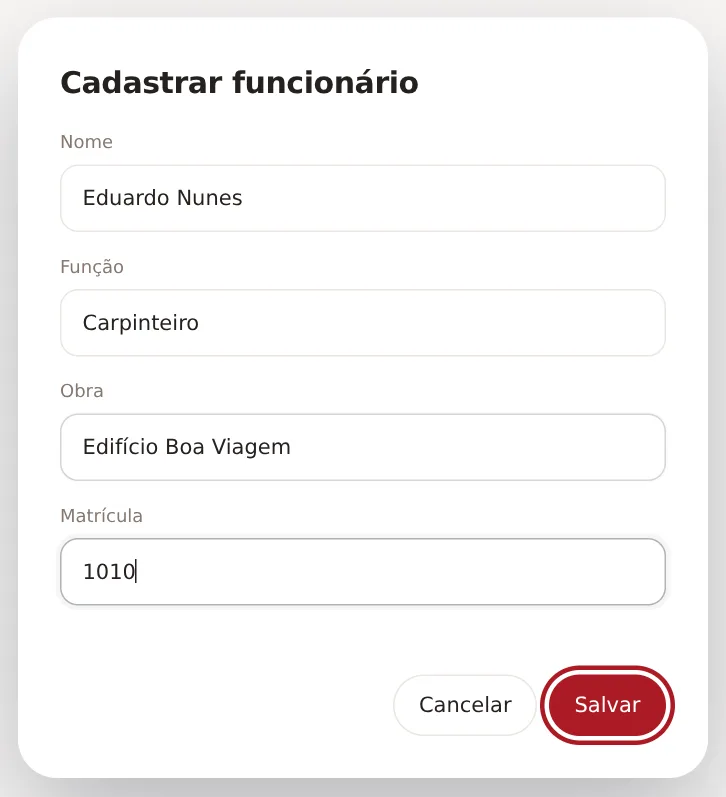
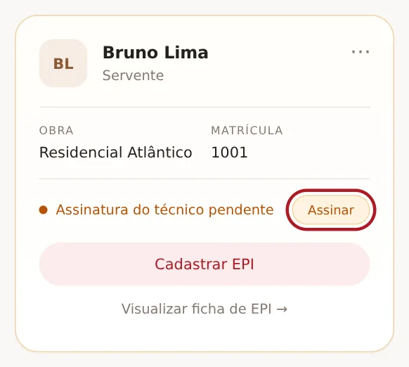
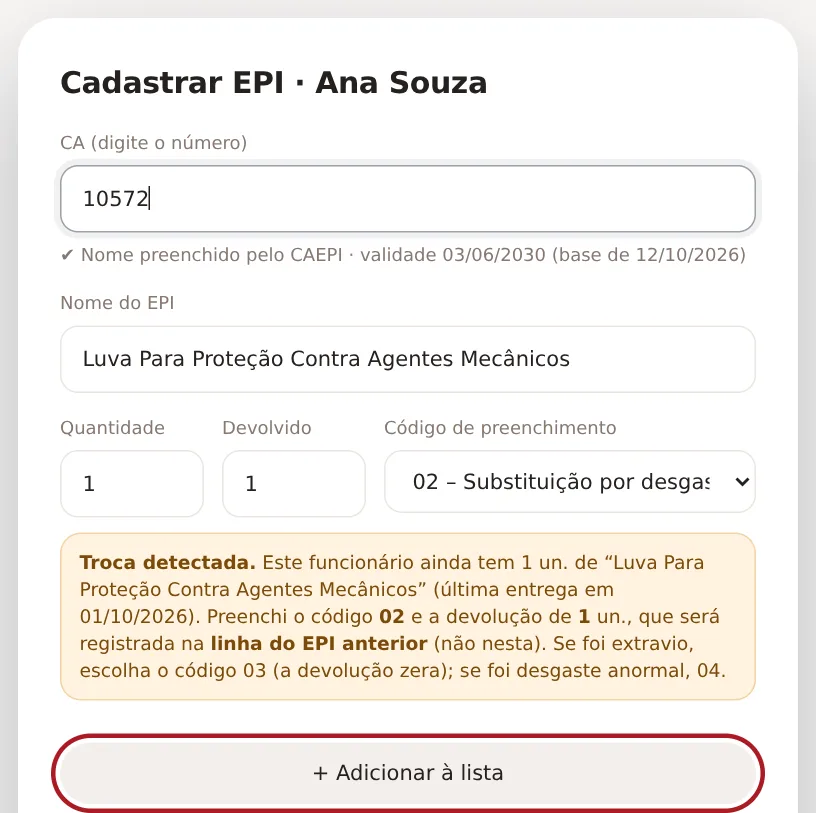
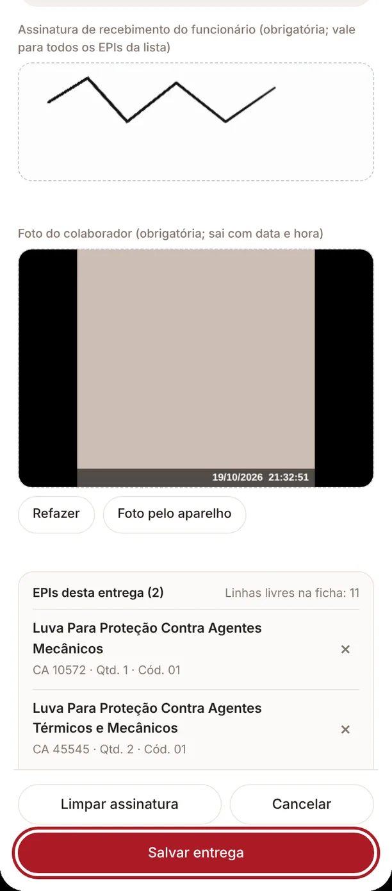
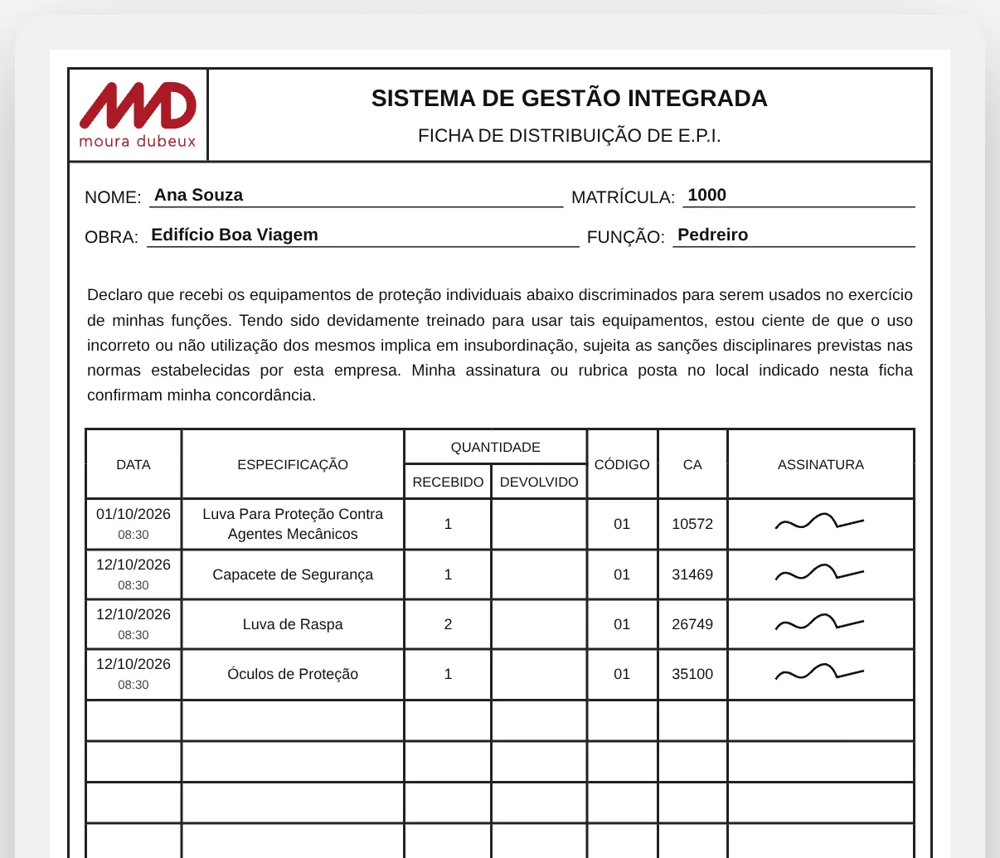
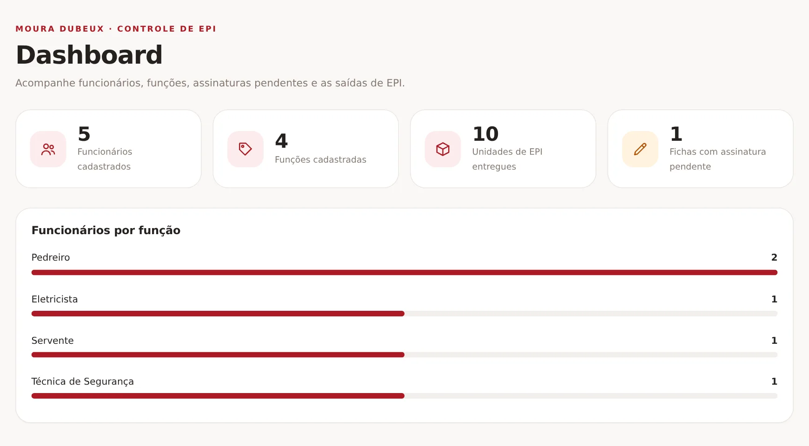
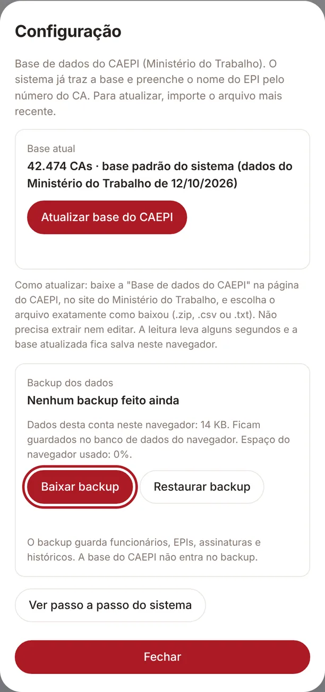

Moura Dubeux · Controle de EPI
Moura Dubeux · Controle de EPI
Defina um usuário e uma senha para usar o controle de entrega de EPI neste dispositivo.
Já tem uma conta?
Informe seu usuário e senha para entrar
Ainda não tem uma conta?
Passo a passo
Antes de começar, veja como o sistema de entrega de EPI funciona.







